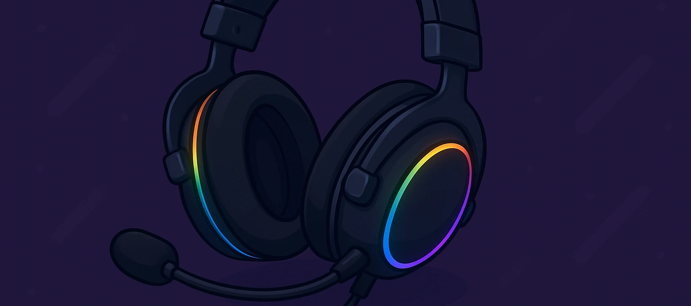

Mejores Auriculares Gaming 2025 | Opiniones Reales | Actualizado Abril 2025
Carlos López
Editor Jefe
Hola, soy Carlos. Llevo más de 15 años trabajando como analista de productos tecnológicos, especializado en periféricos para gaming y productividad. He tenido la oportunidad de probar personalmente estos auriculares gaming, y aquí te comparto mi análisis real y directo para que puedas decidir con criterio.
Índice de Contenidos
- ¿Qué es un auricular gaming?
- ¿Por qué deberías comprar un auricular gaming?
- Comparativa de los mejores modelos
- ¿Cuál compraría yo?
- Preguntas frecuentes
¿Qué es un auricular gaming?
Un auricular gaming va mucho más allá de simplemente escuchar. Se trata de dispositivos diseñados para ofrecer una experiencia inmersiva con sonido envolvente, micrófonos de alta calidad y comodidad para largas sesiones. Para mí, es una herramienta clave si quieres competir o disfrutar de tus juegos favoritos al máximo.
¿Por qué deberías comprar uno?
- Sonido envolvente: fundamental para juegos en los que importa la ubicación de los sonidos.
- Micrófono claro: comunicación nítida en partidas online es vital.
- Comodidad superior: imprescindibles para largas sesiones sin fatiga.
- Compatibilidad: funcionan con PC, consolas y móviles.
- Estética y personalización: completan tu setup gaming con estilo.
Comparativa de los mejores modelos
SteelSeries Arctis Nova 5

Probé los SteelSeries Arctis Nova 5 y la experiencia fue excelente: sonido envolvente muy bien calibrado y una comodidad que aguanta sesiones largas sin molestar.
Principales características:- Sonido espacial con drivers premium
- Banda ajustable para mayor confort
- Compatible con múltiples plataformas
Razer Barracuda X

El Razer Barracuda X me pareció sorprendentemente ligero y versátil. Ideal para gaming portátil gracias a su diseño compacto y conexión inalámbrica estable.
Principales características:- Conectividad inalámbrica USB-C de baja latencia
- Diseño ultraligero con buen aislamiento
- Micrófono desmontable de alta claridad
Logitech G432

El Logitech G432 me sorprendió por su relación calidad-precio: sonido 7.1 envolvente, micrófono con buena captación y muy buena ergonomía.
Principales características:- Sonido envolvente DTS:X 2.0
- Micrófono abatible con cancelación de ruido
- Compatibilidad con múltiples plataformas
Razer BlackShark V2 HyperSpeed

Este modelo fue mi favorito: sonido limpio, aislamiento excelente y sin apenas latencia gracias a la conexión HyperSpeed inalámbrica.
Principales características:- Sonido envolvente THX Spatial Audio
- Micrófono con cancelación de ruido avanzada
- Batería de larga duración e inalámbrico sin latencia
Corsair VOID RGB ELITE

Con los Corsair VOID RGB ELITE el audio se siente potente, y la construcción es robusta. Su diseño envolvente lo hace ideal para jugar durante horas.
Principales características:- Sonido envolvente 7.1 inmersivo
- Iluminación RGB personalizable
- Micrófono omnidireccional con cancelación
¿Cuál compraría yo?
Después de haber probado estos cinco modelos, sin duda me quedo con el Razer BlackShark V2 HyperSpeed. La calidad de sonido, la ligereza del diseño y la conexión inalámbrica impecable lo convierten en el mejor compañero para mis sesiones de gaming.
Ver en AmazonPreguntas Frecuentes (FAQ)
¿Qué diferencia hay entre auriculares gaming y normales?
Los gaming están optimizados para ofrecer mejor sonido posicional, micrófonos de alta calidad y comodidad superior durante horas.
¿Son compatibles con consolas y PC?
Sí, la mayoría lo son. Algunos modelos incluso traen adaptadores USB o conexiones duales para facilitar su uso.
¿Vale la pena pagar más por unos inalámbricos?
Si valoras la libertad de movimiento y una experiencia sin cables, definitivamente sí, especialmente si la latencia está bien controlada.